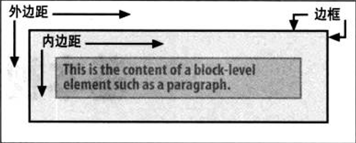
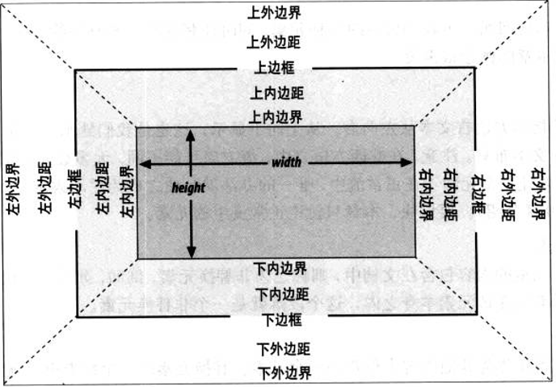
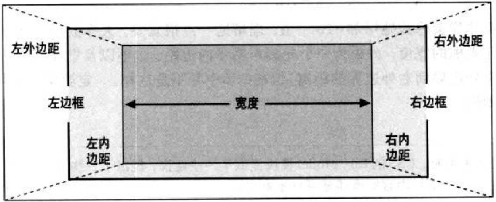
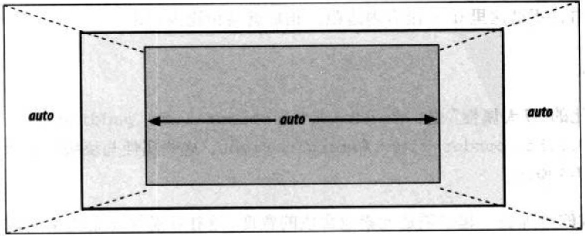
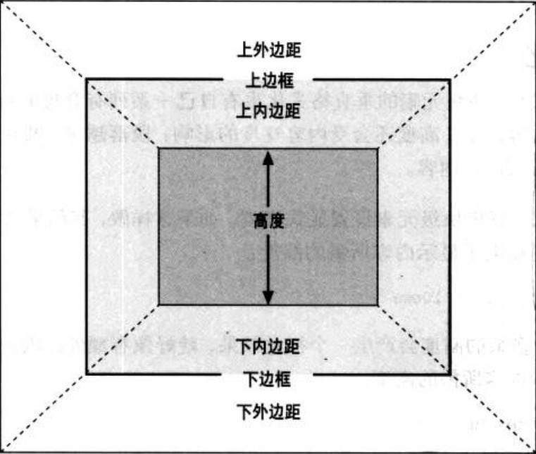
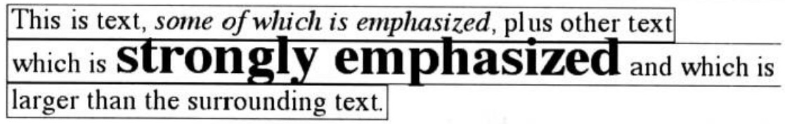

前言
CSS视觉格式化这个词可能比较陌生，但说起盒模型可能就恍然大悟了。实际上，盒模型只是CSS视觉格式化的一部分。视觉格式化分为块级和行内两种处理方式。理解视觉格式化，可以确定得到的效果是应该显示的正确效果，还是浏览器兼容性的bug。
基本概念
【基本框】
CSS假定每个元素都会生成一个或多个矩形框，这称为元素框。
各元素框中心有一个内容区(content area)。
这个内容区周围有可选的内边距、边框和外边距。
可以用多种属性设置外边距、边框和内边距。内容的背景也会应用到内边距。外边距通常是透明的，从中可以看到父元素的背景。内边距不能是负值，但是外边距可以

对于不同类型的元素格式化时存在着差别。块级元素的处理不同于行内元素，而浮动元素和定位元素也分别有着各自不同的表现
【包含块】
每个元素都相对于其包含块摆放，包含块就是一个元素的布局上下文。对于正常的文本流中的一个元素而言，包含块由最近的块级祖先框、表单元格或行内块祖先框的内容边界构成
[注意]行内元素的摆放方式并不直接依赖于包含块
【其他术语】
1、正常流
文本从左向右、从上向下显示，是传统HTML文档的文本布局
2、非替换元素
如果元素的内容包含在文档中，则称之为非替换元素
3、替换元素
指作为其他内容占位符的一个元素(<img>、<video>、<audio>等)。但，inline-block元素在布局中也当作替换元素处理。所以，又包含大量的表单类元素及表格类元素
4、块级元素
在正常流中，在其元素框之前和之后生成“换行”，且会垂直摆放的元素。通过声明display:block可以让元素生成块级框
5、行内元素
在正常流中，不会在元素框之前或之后生成“行分隔符”，是块级元素的后代。通过声明display:inline可以让元素生成行内框
6、根元素
位于文档树顶端的元素，在HTML文档中，是元素HTML
盒模型
盒模型又叫框模型，由宽高、内边距、边框和外边距组成

【四个盒子】
关于盒模型，首先要确定四个盒子的概念
1、元素框是指margin box
元素框: width/height + padding + border + margin
2、可视区域是指border box
[注意]关于可视区域，一直都有两个争论，一个指border box，另一个指padding box。但从字面去理解，可视区域应该就是指可以看到的区域，应该以border box为准
可视区域：width/height + padding + border
3、客户区(client)是指padding box
[注意]关于客户区这种说法来源于javascript中的clientWidth和clientHeight
客户区：width/height + padding
4、内容区是指content box(width和height组成)
内容区：width/heigh
对于水平和垂直布局，有着不同的效果，下面以水平格式化和垂直格式化分别介绍
【水平格式化】
水平格式化的规则是正常流中块级元素框的水平总和等于父元素的width

水平格式化的7大属性是margin-left、border-left、padding-left、width、padding-right、border-right、margin-right。7个属性的值加在一起是元素包含块的宽度，这往往是块元素的父元素的width值(因为块级元素的父级元素几乎都是块级元素)
auto
视觉格式化中比较重要的一个概念就是auto。auto值是用来弥补实际值与所需总和的差距
在水平格式化的7个属性中只有margin-left、width、margin-right三个属性可以设置为auto，其余属性必须设置为特定的值，或者默认宽度为0

1、1个auto
若只有一个值为auto，则根据7个水平属性的总结等于父级width的公式，计算出auto所表示的值
由于width默认值为auto，而margin、border和padding默认值都为0。所以，会有块级元素默认撑满父元素的表现
2、2个auto
若margin-left和margin-right为auto，则元素将在父元素中居中显示
若margin-left和width为auto，则margin-left将被重置为0
若margin-right和width为auto，则margin-right将被重置为0
3、3个auto
若三个值都为auto，则margin-left和margin-right都被重置为0
4、0个auto
若margin-left/width/margin-right三个属性都设置为非auto的某个值，这种情况叫做格式化属性过分受限。这样margin-right将被重置为auto
效果展示：
替换元素
上面介绍的是正常文本流中非替换块级元素的水平格式化，而替换块级元素管理起来则更简单一些。非替换块元素的所有规则同样适用于替换块元素，只有一个例外：如果width是auto，元素的宽度则是内容的固有宽度
下面以图片为例子来说明块级替换元素，但由于图片是行内替换元素，所以需要将display设置为block
如果一个替换元素的width不同于其固有宽度，那么height值也会成比例变化，除非Height显式设置一个特定值，反过来也一样
效果演示：
【垂直格式化】

一个元素的默认高度由其内容决定，高度还会受内容宽度的影响，段落越窄，相应地就会越高，以便容纳其中所有的内联内容
在CSS中，可以对任何块级元素设置显式高度。如果指定高度大于显示内容所需高度，多余的高度会产生一个视觉效果，就好像有额外的内边距一样；如果指定高度小于显示内容所需高度，则会向元素添加一个滚动条。如果元素内容的高度大于元素框的高度，浏览器的具体行为取决于overflow属性
与水平格式化的情况类似，垂直格式化也有7个相关属性：margin-top/border-top/padding-top/height/padding-bottom/border-bottom/margin-bottom
垂直格式化7大属性的和必须等于元素包含块的height
auto
在垂直格式化的7个属性中，只有margin-top、height、margin-bottom三个属性可以设置为auto
与水平格式化不同，垂直格式化的auto处理较为简单。如果块级正常流元素设置为height:auto，显示时其高度将恰好足以包含其内联内容的行盒；如果margin-top或margin-bottom设置为auto，它会自动计算为0
[注意]对于定位元素的上下外边距的auto处理，则有所不同
行布局
行内元素没有块级元素那么简单和直接，块级元素只是生成框，通常不允许其他内容与这些框并存
在了解行内元素视觉格式化之前要先了解一些涉及到的基本术语
【术语】
1、匿名文本
匿名文本(anonymous text)是指所有未包含在行内元素中的字符串
2、em框
em框在字体中定义，也称为字符框(character box)。实际的字形可能比其em框更高或更矮。在CSS中，font-size的值确定了各个em框的高度
3、内容区
在非替换元素中，内容区是元素中各字符的em框串在一起构成的框；而在替换元素中，内容区就是元素的固有高度再加上可能有的外边距、边框或内边距。内容区类似于一个块级元素的内容框(content box)
4、行间距
行间距(leading)是font-size和line-height之差。这个差实际上要分为两半，分别应用到内容区的顶部和底部
[注意]行间距只应用于非替换元素
5、行内框
行内框通过向内容区增加行间距来描述。对于非替换元素，元素行内框的高度等于line-height的高度；对于替换元素，元素行内框的高度则恰好等于内容区的高度，因为行间距不应用到替换元素
[注意]行内框的区域与内联元素背景颜色所在的区域无关
6、行框
行框是包含该行中出现的行内框的最高点和最低点的最小框。换句话说，行框的上边界要位于最高行内框的上边界；而行框的底边要放在最低行内框的下边界
【构造行框】
行框构造是行布局中非常重要的一个环节，接下来介绍行框构造的步骤
1、构造各元素的行内框
a、对于替换元素来说，得到各元素的height、margin-top、margin-bottom、padding-top、padding-bottom、border-top-width、border-bottom-width值，把它们加在一起(因为，行间距不应用到替换元素上，所以替换元素的内容大小等于行内框大小)
b、对于非替换元素来说，得到各行内非替换元素及不属于后代行内元素的所有文本的font-size值和line-height值，再将line-height减去font-size，得到行的行间距，这个行间距除以2，将其一半分别应用到em框的顶部和底部
2、对于各内容区，确定它在整行基线的上方和下方分别超出多少。对于非替换元素来说，确定各元素及匿名文本各部分的基线的位置，并知道该行本身基线的位置，然后将其对齐；对于替换元素来说，将其底边放在整行的基线上
3、对于指定了vertical-align值的元素，确定其垂直偏移量。由此可知，该元素的行内框要向上或向下移动多远，并改变元素在基线上方或下方超出的距离
4、既然已经知道了所有行内框会放在哪里，再来计算最后的行框高度。为此，只需将基线与最高行内顶端之间的距离加上基线与最低行内框底端之间的距离
行的高度(又叫行框的高度)由其组成元素和其他内容(如文本)的高度确定。行高line-height实际上只影响行内元素和其他行内内容，而不会直接影响块级元素
在行布局中，替换元素和非替换元素并不相同，接下来将分别进行介绍
【行内非替换元素】
首先，对于行内非替换元素或匿名文本某一部分，font-size值确定了内容区的高度。如果一个行内元素的font-size为15px，则内容区的高度为15px
内容区加上行间距等于行内框。如果一个行内非替换元素的font-size为15px，line-height为21px，则相差6px。用户代理将这6像素一分为二，将其一半分别应用到内容区的顶部和底部，这就得到了行内框
当line-height小于font-size时，行内框实际上小于内容区
行框定义为行中最高行内框的顶端到最低行内框底端之间的距离，而且各行框的顶端挨着上一行行框的底端

如果一行中存在行高相同但字体大小不同的行内元素，虽然所有行内框大小都相等，但它们排列得并不整齐，因为文本都是按照基线对齐的
如果改变行内框的垂直对齐，比如设置垂直对齐为4px，这会同时提升其内容区和行内框。如果设置的该行内框是行中的最高点，则会把整个行框的顶端也向上移动4像素
框属性
如果一个行内元素存在边框或内边距，而没有设置一个足够大的行高line-height来容纳它们，就有覆盖其他行的危险
内边距和边框不会改变内容区的尺寸，不过它会影响这个元素行内框的高度，但并不会影响行框的生成和布局，即不改变行高。至于外边距，它不会应用到行内非替换元素的顶端和底端，不会影响行框的高度
尽管内边距、边框和外边距不影响行高，但是它们确实能影响一个元素内容的布局。可能将文本推离其左右两端。实际上，如果左、右两外边距为负，可能会把文本拉近行内元素，甚至导致重叠
margin-left、padding-left、border-left应用到元素的开始处；而margin-right、padding-right、border-right应用到元素的结尾处
效果展示：
可以观察到 padding-top padding-bottom 是不影响行高的
【行内替换元素】
一般地，行内替换元素(如图像)都有固有的高度和宽度。有固有高度的替换元素可能导致行框比正常要高。但这不会改变行中任何元素的行高line-height值，包括替换元素本身。相反，只是让行框高度恰好能包含替换元素
行内替换元素需要行高line-height值，从而在垂直对齐时能够正确地定位元素。因为垂直对齐vertical-align的百分数值是相对于元素的行高line-height来计算的。对于垂直对齐来说，图像本身的高度无关紧要，关键是line-height的值
由于行内替换元素行内框的高度由高度height、内边距padding、边框border和外边距margin共同决定。所以，盒模型属性的变化会影响行内框的高度，进而可能会影响行框的高度
默认地，行内替换元素位于基线上。如果向替换元素增加下内边距、外边距或边框，内容区会上移。替换元素并没有自己的基线，所以相对来说最好的办法是将其行内框的底端与基线对齐。因此，实际上是下外边距边界与基线对齐
效果展示：